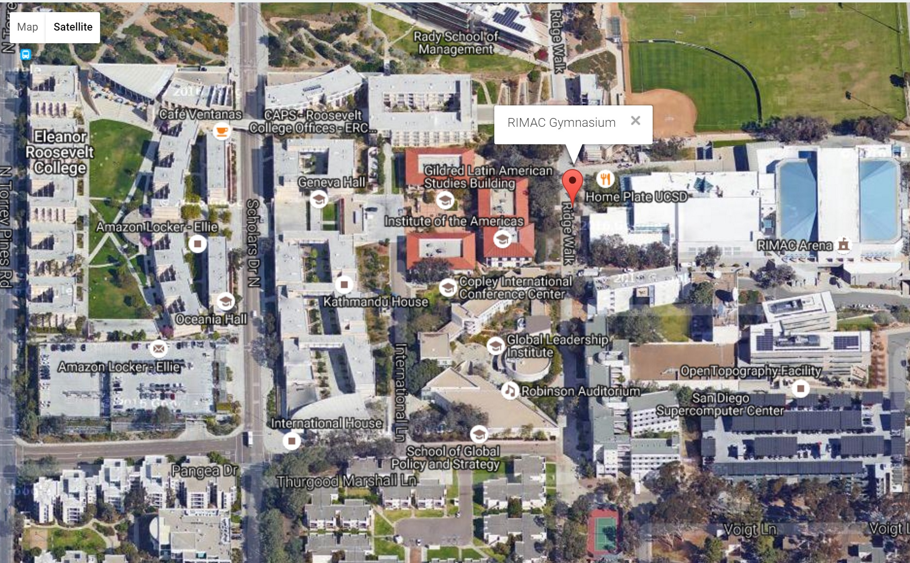
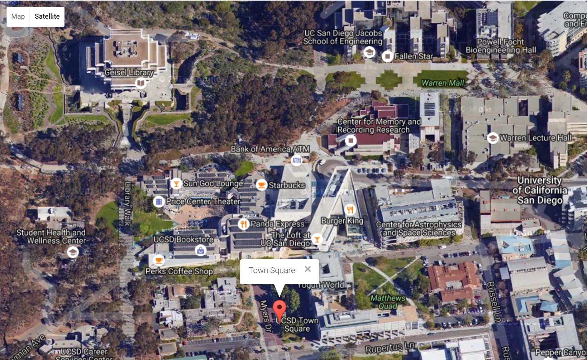
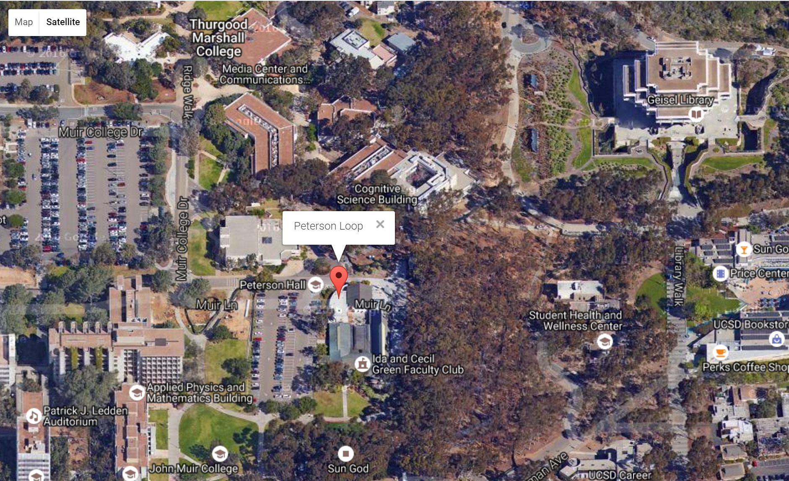
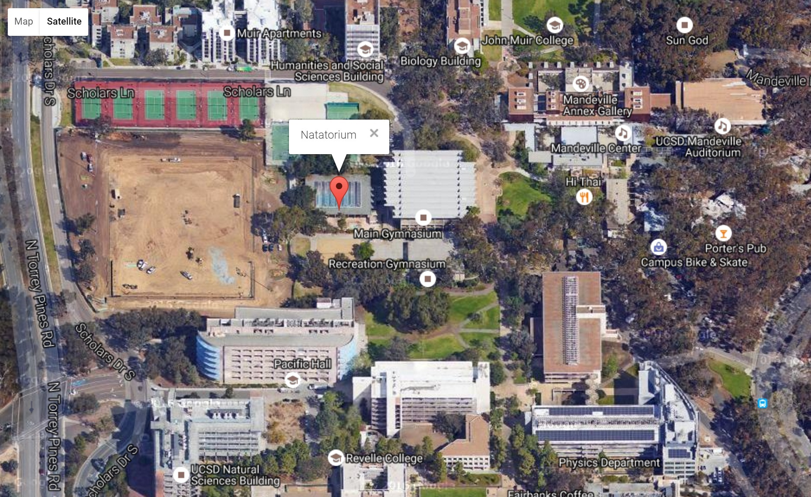

Recruitment 2017
Join UC San Diego Dragon Boat!
Recruitment for the UCSD Dragon Boat Team is held once a year in the Fall. All current UCSD students are invited to tryout, no experience necessary!
Please attend our Recruitment Info Session(GBM) (Friday, 9/29 @7:00pm) for more information about the tryout process.
Rides will be provided for ALL off campus recruitment events.
We also provide FREE equipment for those without their own, including boats,
paddles, and personal floation devices (PFDs).
Please email us at ucsddragonboat@gmail.com in advance for questions or concerns.
Check Out Our 2017 Recruitment Video!
Schedule
| Date | Event | Time | Location |
|---|---|---|---|
| Monday, 9/25 | Triton Power Hour Tabling | 11:00am-2:00pm | Outside RIMAC Gymnasium (We are flyering! Just stop by to say Hi! 👋) |
| Monday, 9/25 | Library Walk Tabling | 9:00am-3:00pm | Walkway in front of Geisel Library (We are flyering!) |
| Friday, 9/29 | GBM / Info Session | 7:00pm-9:00pm | RIMAC Gymnasium Green Room |
| Monday, 10/2 | Land Practice Tryouts | 8:00pm-9:00pm | Warren West Field (Come to at least 1/3) |
| Tuesday, 10/3 | Land Practice Tryouts | 7:00pm-8:00pm | Muir Field (Come to at least 1/3) |
| Tuesday, 10/3 | Poolside Technique Practice | 10:00am-2:00pm | Natatorium (Come if you can to work on paddling technique!) |
| Wednesday, 10/4 | Land Practice Tryouts | 8:00pm-9:00pm | Warren West Field (Come to at least 1/3) |
| Friday, 10/6 | Bonfire Social | 5:30pm-8:00pm | La Jolla Shores (meet at Peterson Loop @5:00pm for provided rides *TIME CHANGED FROM FLYER* |
| Saturday, 10/7 | Water Practice Tryouts | 8:30am-12:00pm | Mission Bay (meet at Town Square @8:00am for provided rides) |
| Sunday, 10/8 | Water Practice Tryouts | 8:30am-12:00pm | Mission Bay (meet at Town Square @8:00am for provided rides) |
Locations
RIMAC Gymnasium
Town Square
Warren Field

Peterson Loop
Natatorium
Map